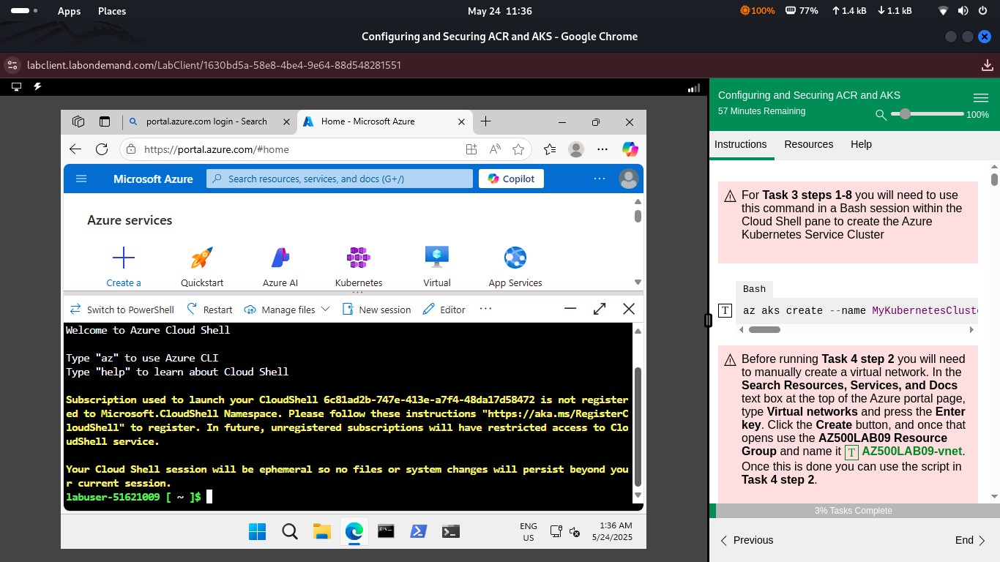
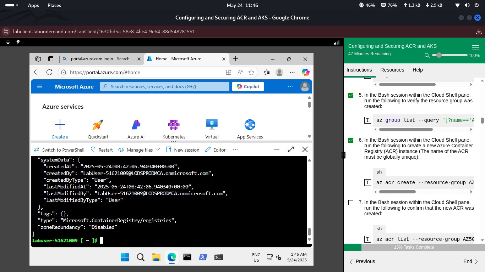
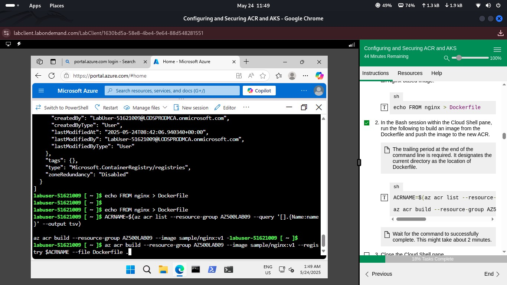
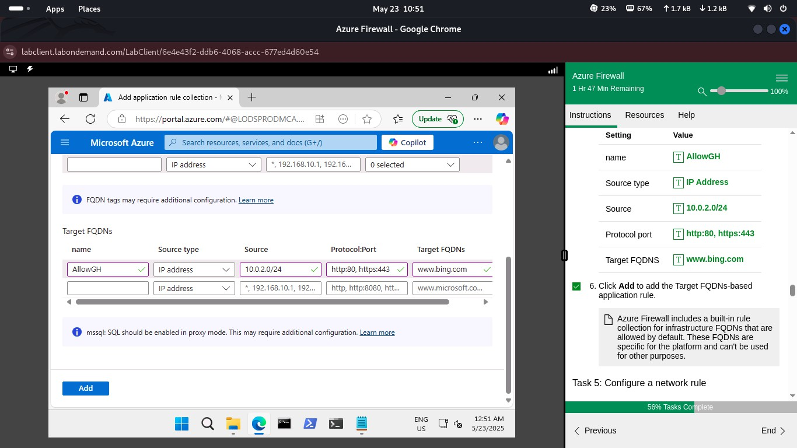
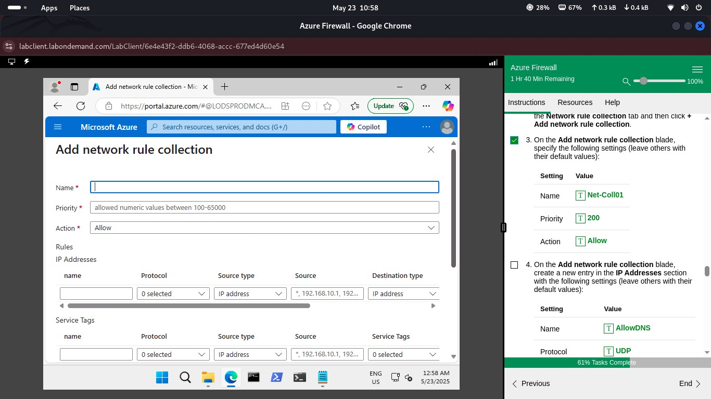
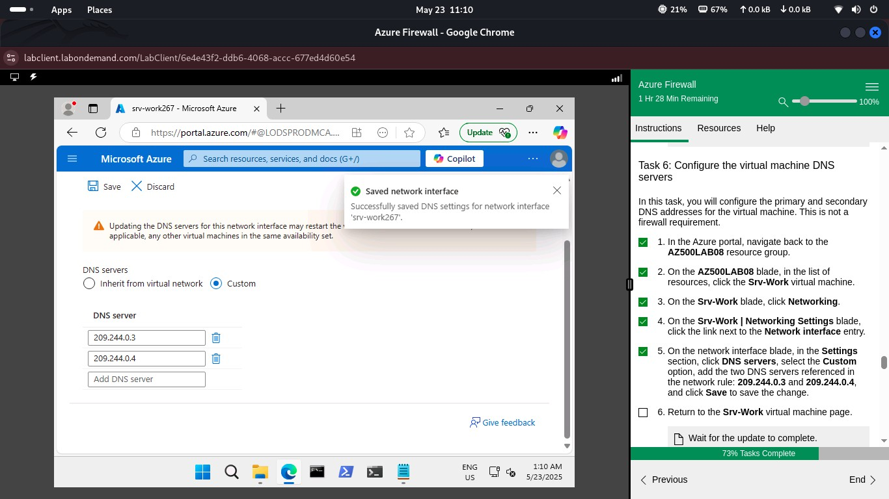
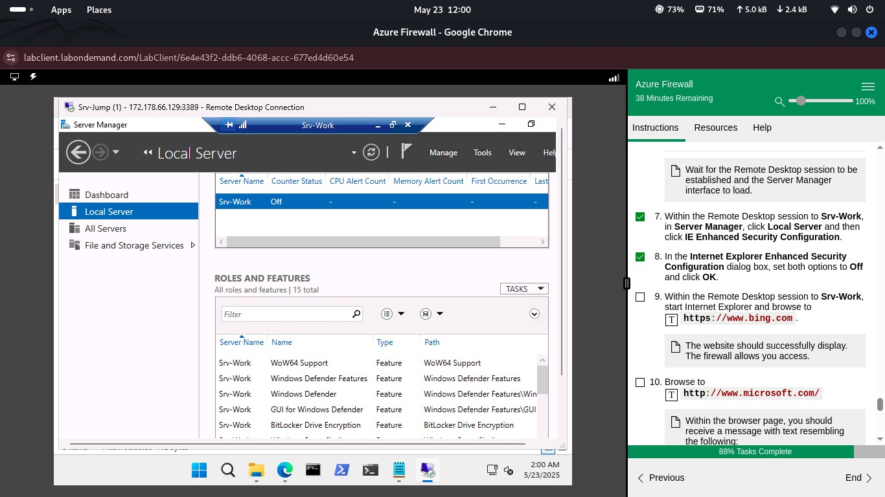

Executive Summary
This project demonstrates the deployment and security configuration of Azure Kubernetes Service (AKS) and Azure Container Registry (ACR) within Microsoft Azure.
The implementation focuses on securing containerized workloads using Azure RBAC, Managed Identity, Azure Firewall, custom DNS, and network segmentation.
Azure Portal, Azure CLI, and Azure PowerShell were used throughout the deployment to configure, validate, secure, and clean up cloud resources following Azure security best practices.
Architecture
The following architecture illustrates how Azure Kubernetes Service (AKS) securely interacts with Azure Container Registry (ACR) using Managed Identity, Azure RBAC, Azure Firewall, and network segmentation.

Lab Walkthrough
1. Launch Cloud Shell and Prepare for Deployment
I began by launching Azure Cloud Shell and reviewing the deployment requirements before creating the AKS cluster and Azure Container Registry.

2. Deploy Azure Kubernetes Service (AKS)
Azure Kubernetes Service (AKS) was deployed within the Azure subscription using Azure CLI. During deployment, networking, node configuration, and cluster settings were configured according to Microsoft security best practices.

3. Create Azure Container Registry (ACR)
A private Azure Container Registry was created to securely store container images. The registry provides centralized image management while preventing public access to production container images.
4. Configure Managed Identity
A managed identity was configured for the AKS cluster to securely authenticate with Azure services without storing credentials. This approach improves security by eliminating the need to manage secrets within applications.

5. Assign Azure RBAC Permissions
The AcrPull Azure RBAC role was assigned to the AKS managed identity, allowing the Kubernetes cluster to securely pull container images from Azure Container Registry while following the principle of least privilege.

6. Configure Azure Firewall and Networking
Azure Firewall, DNS settings, and virtual network configurations were implemented to secure communication between Azure resources and control inbound and outbound traffic according to organizational security policies.

7. Validate the Deployment
The deployment was validated by confirming successful communication between AKS and Azure Container Registry. Azure CLI commands and Azure Portal were used to verify role assignments, DNS resolution, and successful image retrieval.

8. Clean Up Resources
After successfully completing the lab, all Azure resources created during the deployment were removed to prevent unnecessary cloud costs and maintain a clean Azure environment.

Conclusion
This project demonstrates practical experience deploying and securing Azure Kubernetes Service (AKS) and Azure Container Registry (ACR) using Microsoft Azure security best practices. The implementation showcases identity and access management, secure container image delivery, network protection, Azure Firewall, DNS configuration, and cloud resource governance required for securing enterprise containerized workloads.